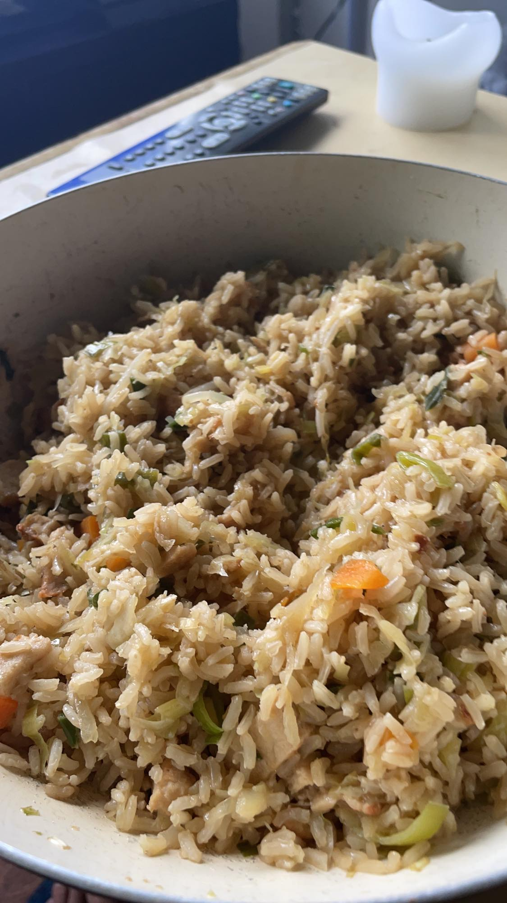

Youssef's Special Dish
Home Page
Moroccan Lentils

Description
This meal is one that I used to eat every single day. It's super quick to make,
relatively cheap and is very filling. You can't go wrong with good ol' rice.
Ingredients (2 Servings)
- Brown Rice (250g)
- Onions (50g)
- Garlic (2 cloves)
- Bell Pepper (100g)
- Carrots (100g)
- Soja Sauce (35ml)
- Spinach (50g)
- [Vegan] Meat/Chicken (100g)
- Olive Oil (2 spoonfuls)
Step-by-Step
- Chop up all vegetables into finely diced pieces.
- Add the oil to a pan and bring to heat.
- Add 1l of water to a pot and bring to boil.
- Add a few pinches of salt to the water and boil the rice (~10-15min).
- Pan fry the meat until it's fully cooked(~10min), then add the vegetables.
- Pour water out of the pot with rice and then place the rice into the pan.
- Add soja sauce on top of the rice and mix everything together
- When the rice, meat and vegetables look ready, add salt and pepper and serve immediately.
You're all set! Enjoy the meal.